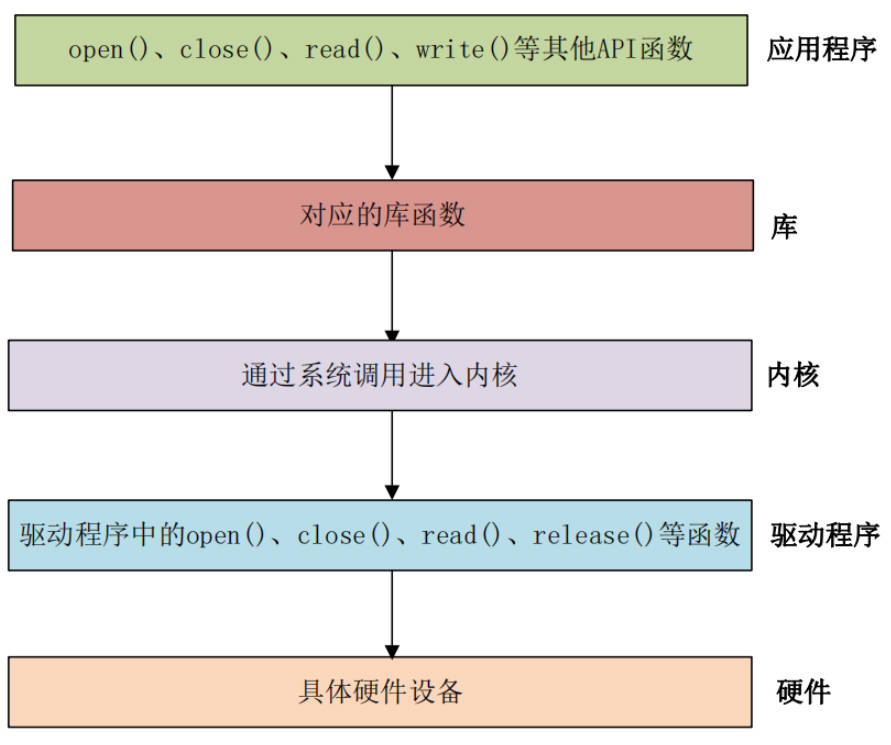

一、字符设备驱动简介
Linux/Unix 系统将硬件设备分为两大类：
字符设备
特点：以字节流的形式进行数据传输。数据像水流一样，没有固定的块大小，只能顺序访问。
举例：键盘、鼠标、串口、控制台 (/dev/console)、声卡等。我们最常见的例子就是终端，你输入的字符会一个接一个地传递给系统。
块设备
特点：以数据块 为单位进行数据传输（如 512B、1KB、4KB）。支持随机访问，可以任意跳到某个数据块进行读写。通常有缓存机制。
举例：硬盘、U盘、SD卡等存储设备。
Linux 里一切皆文件。用户态不会直接调用“驱动函数”，而是通过设备文件。然后使用标准的文件操作函数（如 open, read, write, close）与之交互。而驱动的工作，就是实现这些函数背后的具体逻辑。
1 ls -l /dev/null /dev/zero /dev/random /dev/tty
你会看到类似：
1 2 3 4 crw-rw-rw- 1 root root 1, 3 ... /dev/null
第一个字符 c 表示字符设备。后面的 1, 3 是主设备号和次设备号。
概念
含义
主设备号 major
表示哪一类设备，内核用它找对应驱动
次设备号 minor
表示这一类设备里的第几个实例
/dev/xxx用户态看到的设备节点
字符设备
以字节流方式读写，典型是 read/write/ioctl
块设备
以块为单位访问，典型是磁盘、分区
所谓字符设备驱动就是一段运行在内核空间 的程序代码，它充当了用户空间应用程序 与底层硬件字符设备 之间的桥梁。
它负责：
将用户的请求 （如 read, write）翻译成操控硬件的具体指令 。将硬件的行为和状态 （如数据到达、操作完成）反馈给用户程序 。

二、字符设备驱动的核心对象
学习字符设备，先抓住四个对象：
对象
作用
dev_t设备号，包含 major 和 minor
struct cdev内核里的字符设备对象
struct file_operations用户态系统调用到驱动函数的映射表
struct file一次打开文件的内核表示
最小关系如下：
1 2 3 4 5 6 7 8 9 10 用户态 fdstruct fileopen
下面一个一个看这几个对象。
2.1 设备号——dev_t
这是内核中用来唯一标识一个设备的号码。由主设备号（major）和次设备号（minor）组成。
主设备号：标识设备对应的驱动。例如，所有由同一个驱动管理的串口共享一个主设备号。=
次设备号：由驱动使用，用来区分同一个驱动管理的不同设备或实例。例如，一个驱动管理两个串口，它们主设备号相同，但次设备号不同。
驱动需要向内核申请（或静态指定）一个设备号。
2.2 字符设备结构——cdev
1 2 3 4 5 6 7 8 struct cdev {struct kobject kobj ;struct module *owner ;const struct file_operations *ops ;struct list_head list ;dev_t dev;unsigned int count;
内核用这个结构体来在内部表示一个字符设备。它通常与 dev_t（设备号）和 file_operations（操作方法）关联在一起。
驱动需要分配、初始化并把这个 cdev 结构体添加到内核 中，这样内核才知道这个设备的存在。
2.3 文件操作集——file_operations
这是字符设备驱动的核心，是一个函数指针的集合。驱动开发者通过填充这个结构体，告诉内核：“当用户对我的设备文件进行某种操作时，请调用我写的这个函数。”
关键成员包括：
1 2 3 4 5 6 7 8 9 10 11 12 13 14 15 16 17 18 19 20 21 22 23 24 25 26 27 28 29 30 31 32 33 34 struct file_operations {struct module *owner ;loff_t (*llseek) (struct file *, loff_t , int );ssize_t (*read) (struct file *, char __user *, size_t , loff_t *);ssize_t (*write) (struct file *, const char __user *, size_t ,loff_t *);ssize_t (*read_iter) (struct kiocb *, struct iov_iter *);ssize_t (*write_iter) (struct kiocb *, struct iov_iter *);int (*iterate) (struct file *, struct dir_context *);unsigned int (*poll) (struct file *, struct poll_table_struct *) ;long (*unlocked_ioctl) (struct file *, unsigned int , unsigned long );long (*compat_ioctl) (struct file *, unsigned int , unsigned long );int (*mmap) (struct file *, struct vm_area_struct *);int (*mremap)(struct file *, struct vm_area_struct *);int (*open) (struct inode *, struct file *);int (*flush) (struct file *, fl_owner_t id);int (*release) (struct inode *, struct file *);int (*fsync) (struct file *, loff_t , loff_t , int datasync);int (*aio_fsync) (struct kiocb *, int datasync);int (*fasync) (int , struct file *, int );int (*lock) (struct file *, int , struct file_lock *);ssize_t (*sendpage) (struct file *, struct page *, int , size_t ,loff_t *, int );unsigned long (*get_unmapped_area) (struct file *, unsigned long , unsigned long , unsigned long , unsigned long ) ;int (*check_flags)(int );int (*flock) (struct file *, int , struct file_lock *);ssize_t (*splice_write)(struct pipe_inode_info *, struct file *,loff_t *, size_t , unsigned int );ssize_t (*splice_read)(struct file *, loff_t *, struct pipe_inode_info *, size_t , unsigned int );int (*setlease)(struct file *, long , struct file_lock **, void **);long (*fallocate)(struct file *file, int mode, loff_t offset,loff_t len);void (*show_fdinfo)(struct seq_file *m, struct file *f);#ifndef CONFIG_MMU unsigned (*mmap_capabilities)(struct file *);#endif
owner 拥有该结构体的模块的指针，一般设置为 THIS_MODULE。llseek 函数用于修改文件当前的读写位置。read：实现用户空间 read() 调用的逻辑。write：实现用户空间 write() 调用的逻辑。poll 是个轮询函数，用于查询设备是否可以进行非阻塞的读写。unlocked_ioctl 函数提供对于设备的控制功能，与应用程序中的 ioctl 函数对应。compat_ioctl 函数与 unlocked_ioctl 函数功能一样，区别在于在 64 位系统上，32 位的应用程序调用将会使用此函数。在 32 位的系统上运行 32 位的应用程序调用的是 unlocked_ioctl。mmap 函数用于将设备的内存映射到进程空间中(也就是用户空间)，一般帧缓冲设备会使用此函数，比如 LCD 驱动的显存，将帧缓冲(LCD 显存)映射到用户空间中以后应用程序就可以直接操作显存了，这样就不用在用户空间和内核空间之间来回复制。open：当设备文件被打开时调用，常用于初始化。release：当设备文件被关闭时调用，常用于清理资源。ioctl：用于实现设备特定的命令和控制（如设置串口波特率）。fasync 函数用于刷新待处理的数据，用于将缓冲区中的数据刷新到磁盘中。aio_fsync 函数与 fasync 函数的功能类似，只是 aio_fsync 是异步刷新待处理的数据。
用户需要自己实现这些函数，并注册回调函数：
1 2 3 4 5 6 7 8 static const struct file_operations char_lab_fops =
这张表告诉内核：
1 2 3 4 用户态 open() -> char_lab_open()
三、字符设备驱动结构
3.1 驱动模块的加载和卸载
Linux 驱动有两种运行方式：
第一种就是将驱动编译进 Linux 内核中，这样当 Linux 内核启动的时候就会自动运行驱动程序
第二种就是将驱动编译成模块(Linux 下模块扩展名为 .ko)，在 Linux 内核启动以后使用 insmod 命令加载驱动模块。在调试驱动的时候一般都选择将其编译为模块，这样我们修改驱动以后只需要编译一下驱动代码即可，不需要编译整个 Linux 代码。
1 2 module_init(xxx_init);
module_init 函数用来向 Linux 内核注册一个模块加载函数，参数 xxx_init 就是需要注册的具体函数，当使用 insmod 命令加载驱动的时候，xxx_init 这个函数就会被调用。module_exit() 函数用来向 Linux 内核注册一个模块卸载函数，参数 xxx_exit 就是需要注册的具体函数，当使用 rmmod 命令卸载具体驱动的时候 xxx_exit 函数就会被调用。
3.2 字符设备的注册与注销
字符设备的注册和注销函数原型如下所示：
1 2 3 static inline int register_chrdev (unsigned int major, const char *name, const struct file_operations *fops) static inline void unregister_chrdev (unsigned int major, const char *name)
register_chrdev 函数用于注册字符设备，此函数一共有三个参数，这三个参数的含义如下：
major：主设备号，Linux 下每个设备都有一个设备号，设备号分为主设备号和次设备号两部分，关于设备号后面会详细讲解。name：设备名字，指向一串字符串。fops：结构体 file_operations 类型指针，指向设备的操作函数集合变量。
unregister_chrdev 函数用户注销字符设备，此函数有两个参数，这两个参数含义如下：
major：要注销的设备对应的主设备号。name：要注销的设备对应的设备名。
一般字符设备的注册在驱动模块的入口函数 xxx_init 中进行，字符设备的注销在驱动模块的出口函数 xxx_exit 中进行。
例：
1 2 3 4 5 6 7 8 9 10 11 12 13 14 15 16 17 18 19 20 21 22 23 24 25 static struct file_operations test_fops ;static int __init xxx_init (void ) { int retvalue = 0 ; 200 , "chrtest" , &test_fops);if (retvalue < 0 ){return 0 ;static void __exit xxx_exit (void ) 200 , "chrtest" );
3.3 常用的回调
前面我们定义了 file_operations 结构体类型的变量 test_fops，但是还没对其进行初始化，也就是初始化其中的open、release、read 和 write 等具体的设备操作函数。接下来对这些函数进行初始化。在初始化 test_fops 之前我们要分析一下需求，也就是要对 char_lab 这个设备进行哪些操作，只有确定了需求以后才知道我们应该实现哪些操作函数。下面介绍几个比较常用的回调函数。
设备打开和关闭是最基本的要求，几乎所有的设备都得提供打开和关闭的功能。因此我们需要实现 file_operations 中的 open 和 release 这两个函数。
1 2 3 4 5 static int char_lab_open (struct inode *inode, struct file *file) "char_lab: opened\n" );return 0 ;
open 函数会在用户态调用 open(“/dev/char_lab”, ...) 时调用。
返回值：
返回值
含义
0打开成功
负 errno
打开失败，如 -EBUSY、-ENOMEM
release 会在用户态关闭文件描述符时触发。
1 2 3 4 5 static int char_lab_release (struct inode *inode, struct file *file) "char_lab: closed\n" );return 0 ;
注意：release 不是“每次 close fd 都必然一对一调用”。多个 fd 可能指向同一个内核 struct file，内核在最后一个引用释放时调用 release。入门阶段可以先把它理解为 close 回调。
write 会在用户态调用 write(fd, buffer, count); 时进入：
1 2 3 4 5 6 7 8 9 10 11 12 13 14 15 static ssize_t char_lab_write (struct file *file, const char __user *buf, size_t count, loff_t *ppos) char kbuf[8 ];int ret_value = 0 ;if (ret_value == 0 ) {"kernel recevdata:%s\r\n" , writebuf);else {"kernel recevdata failed!\r\n" );return 0 ;
关键点：buf 是用户态地址。内核不能直接用 memcpy 解引用它，必须用 copy_from_user。
成功时通常返回 count，表示“用户传了多少字节，我接受了多少字节”。
read 在用户态调用 read(fd, buffer, count); 时调用：
1 2 3 4 5 6 7 8 9 10 11 12 13 14 static ssize_t char_lab_read (struct file *file, char __user *buf, size_t count, loff_t *ppos) int ret_value = 0 ;if (ret_value == 0 ) {"kernel senddata ok!\r\n" );else {"kernel senddata failed!\r\n" );return 0 ;
这次 buf 也是用户态地址，但方向反过来，要用 copy_to_user：
read 要处理 *ppos。否则用户态执行 cat /dev/char_lab 时，第二次读还可能继续返回数据，严重时让 cat 一直循环。
完成之后，即可注册回调函数：
1 2 3 4 5 6 7 static struct file_operations chrdevbase_fops =
copy_to_user 和 copy_from_user
注意代码是编写在内核环境下的，而数据却是在用户态下。内核态和用户态有不同的地址空间和权限。用户态传进来的指针可能是：
非法地址。
已释放地址。
恶意伪造地址。
当前页不在内存里的地址。
如果驱动直接：
1 memcpy (kernel_buf, user_buf, count);
内核可能直接 oops。
正确做法是：
1 2 copy_from_user(kernel_buf, user_buf, count);
3.4 设备号
设备号 是 Linux 内核用来唯一标识一个设备的编号。它类似于我们身份证号，内核通过这个号码来找到对应的设备驱动。
它是一个 dev_t 类型的变量（在 #include <linux/types.h> 中定义），本质上是一个 32位的无符号整数。
设备号由两部分组成：
主设备号 - 占用高 12 位 (范围 0~4095)。它用来标识设备对应的驱动程序。内核通过主设备号将设备文件与驱动程序关联起来。例如，所有由同一个字符设备驱动管理的设备，它们的主设备号是相同的。
次设备号 - 占用低 20 位。它由驱动程序自己使用，用来区分由同一个驱动管理的不同设备实例或不同功能。
它们共同构成了一个完整的设备号。
一个形象的比喻：
主设备号 就像是一个公司的总机号码，你拨打这个号码可以找到这家公司。
次设备号 就像是公司的分机号码，帮你转接到公司内部的某个具体部门或员工。
Linux 提供了一个名为 dev_t 的数据类型表示设备号，dev_t 定义在文件 include/linux/types.h 里面，定义如下：
1 2 3 typedef __u32 __kernel_dev_t ;typedef __kernel_dev_t dev_t ;
此外，在文件 include/linux/kdev_t.h 中提供了几个关于设备号的操作函数，如下所示：
1 2 3 4 5 #define MINORBITS 20 #define MINORMASK ((1U << MINORBITS) - 1) 8 #define MAJOR(dev) ((unsigned int) ((dev) >> MINORBITS)) #define MINOR(dev) ((unsigned int) ((dev) & MINORMASK)) #define MKDEV(ma,mi) (((ma) << MINORBITS) | (mi))
MINORBITS 表示次设备号位数，一共是 20 位。MINORMASK 表示次设备号掩码。MAJOR 用于从 dev_t 中获取主设备号，将 dev_t 右移 20 位即可。MINOR 用于从 dev_t 中获取次设备号，取 dev_t 的低 20 位的值即可。MKDEV 用于将给定的主设备号和次设备号的值组合成 dev_t 类型的设备号。
3.5 设备号的分配与注册
3.5.1 静态分配
开发者自己指定一个明确的主设备号。不推荐 ，因为容易与系统中已有的设备号冲突。
1 2 3 #define MY_MAJOR 211 dev_t devno = MKDEV(MY_MAJOR, 0 ); "my_device" );
3.5.2 动态分配
让内核自动分配一个可用的主设备号。这是现代驱动开发的首选方式，可以避免冲突。
1 2 3 4 5 6 dev_t devno;int major;0 , count, "my_device" );
无论哪种方式，在驱动卸载时，都必须释放 设备号：
1 unregister_chrdev_region(devno, count);
3.6 字符设备驱动的一般编写流程
确定主次设备号：静态指定或动态向内核申请。
实现 file_operations 方法：编写 open, read, write 等函数的具体代码。在这些函数中，你可能会：
从硬件寄存器读取数据（read）
向硬件寄存器写入数据（write）
配置硬件（ioctl）
使用 copy_to_user() 和 copy_from_user() 在内核空间和用户空间之间安全地传递数据
初始化并注册 cdev：
使用 cdev_init() 将 cdev 与 file_operations 绑定
使用 cdev_add() 将设备注册到内核，使其生效
创建设备文件：在 /dev 目录下使用 mknod 命令或通过驱动代码自动创建（使用 device_create）一个设备文件，并将其与你的设备号关联。
模块的加载和卸载：
在模块加载函数 (module_init) 中完成上述的申请设备号、注册 cdev 等操作
在模块卸载函数 (module_exit) 中完成相反的清理工作：注销 cdev、释放设备号等
四、实例
char_lab.c：
1 2 3 4 5 6 7 8 9 10 11 12 13 14 15 16 17 18 19 20 21 22 23 24 25 26 27 28 29 30 31 32 33 34 35 36 37 38 39 40 41 42 43 44 45 46 47 48 49 50 51 52 53 54 55 56 57 58 59 60 61 62 63 64 65 66 67 68 69 70 71 72 73 74 75 76 77 78 79 80 81 82 83 84 85 86 87 88 89 90 91 92 93 94 95 96 97 98 99 100 101 102 103 104 105 106 107 108 109 110 111 112 113 114 115 116 117 118 119 120 121 122 123 124 125 126 127 128 129 130 131 132 133 134 135 136 137 138 139 140 141 142 143 144 145 146 147 148 149 150 151 152 153 154 #include <linux/atomic.h> #include <linux/device.h> #include <linux/fs.h> #include <linux/module.h> #include <linux/uaccess.h> #define CHAR_LAB_NAME "char_lab" static int char_lab_value;static atomic_t char_lab_open_count;static unsigned int char_lab_major;static dev_t char_lab_devno;static struct class *char_lab_class ;static struct device *char_lab_device ;static char *char_lab_devnode (struct device *dev, umode_t *mode) if (mode) {0666 ;return NULL ;static int char_lab_open (struct inode *inode, struct file *file) int count = atomic_inc_return(&char_lab_open_count);": opened %d times\n" , count);return 0 ;static int char_lab_release (struct inode *inode, struct file *file) ": closed\n" );return 0 ;static ssize_t char_lab_write (struct file *file, const char __user *buf, size_t count, loff_t *ppos) char kbuf[8 ] = {0 ,};if (count == 0 || count >= sizeof (kbuf)) {return -EINVAL;if (copy_from_user(kbuf, buf, count)) {return -EFAULT;if (kbuf[0 ] == '1' ) {1 ;else if (kbuf[0 ] == '0' ) {0 ;else {return -EINVAL;return count;static ssize_t char_lab_read (struct file *file, char __user *buf, size_t count, loff_t *ppos) char kbuf[4 ];int len;if (*ppos > 0 ) {return 0 ;sizeof (kbuf), "%d\n" , char_lab_value);if (count < len) {return -EINVAL;if (copy_to_user(buf, kbuf, len)) {return -EFAULT;return len;static const struct file_operations char_lab_fops =static int __init char_lab_init (void ) int ret;0 ;atomic_set (&char_lab_open_count, 0 );0 , CHAR_LAB_NAME, &char_lab_fops);if (ret < 0 ) {": failed to register chrdev: %d\n" , ret);return ret;0 );if (IS_ERR(char_lab_class)) {": failed to create class: %d\n" , ret);return ret;NULL , char_lab_devno, NULL ,if (IS_ERR(char_lab_device)) {": failed to create device: %d\n" , ret);NULL ;return ret;": loaded, major=%u, /dev/%s ready\n" ,return 0 ;static void __exit char_lab_exit (void ) ": unloaded, major=%u\n" , char_lab_major);"GPL" );"orange-pi-edge" );"Minimal register_chrdev character device for Linux driver learning" );"1.0" );
Makefile：
1 2 3 4 5 6 7 8 9 10 11 obj-m += char_lab.o
然后开始运行：
1 2 3 make
可以看到：
1 crw-rw-rw- 1 root root 10 , 119 Aug 3 16 :10 /dev/char_lab
主设备号 10 是 misc 设备常用的主设备号，次设备号 119 是动态分配的。不同系统上 minor 可能不同。
测试：
1 2 3 4 5 6 7 8 echo 1 > /dev/char_lab# output # 1 # 0
观察 open/release：
1 sudo dmesg | grep char_lab | tail -n 12
输出：
1 2 3 4 5 6 7 8 9 10 11 [12932.175513] char_lab: loaded, /dev/char_lab ready
这说明：
insmod 后 misc_register() 成功。echo 1 > /dev/char_lab 触发了 open/write/release。cat /dev/char_lab 触发了 open/read/release。open_count 递增，说明 open 回调执行了。
卸载驱动：
1 2 3 4 5 sudo rmmod char_lab# output # ls : cannot access '/dev/char_lab' : No such file or directory